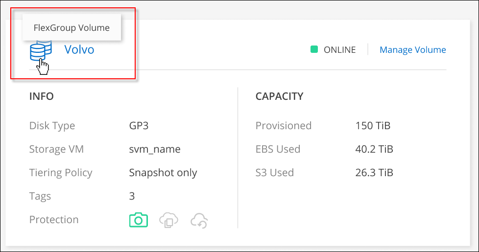

版本資訊
版本資訊
管理現有磁碟區
 建議變更
建議變更
BlueXP可讓您管理磁碟區和CIFS伺服器。它也會提示您移動磁碟區、以避免發生容量問題。
管理磁碟區
您可以在儲存需求變更時管理磁碟區。您可以檢視、編輯、複製、還原及刪除磁碟區。
-
從左側導覽功能表中、選取*儲存設備> Canvas*。
-
在「畫版」頁面上、按兩下 Cloud Volumes ONTAP 您要管理磁碟區的「功能區」工作環境。
-
在工作環境中、按一下 * Volumes （磁碟區） * 標籤。

-
在 Volumes （磁碟區）索引標籤上、瀏覽至所需的磁碟區標題、然後按一下 * Manage Volumes （管理磁碟區） * 以存取 Manage Volumes （管理磁碟區）右側面板。
工作 行動 檢視磁碟區的相關資訊
在「管理磁碟區」面板的「 Volume Actions 」（ Volume 動作）下、按一下「 * 檢視磁碟區詳細資料 * 」
取得 NFS 掛載命令
-
在「管理磁碟區」面板的「 Volume Actions 」（ Volume 動作）下、按一下「 * 掛載命令 * 」。
-
按一下 * 複本 * 。
複製磁碟區
-
在「管理磁碟區」面板的「 Volume Actions 」（磁碟區動作）下、按一下「 * Clone the volume * 」（
-
視需要修改複本名稱、然後按一下 * Clone （複製） * 。
此程序會建立 FlexClone Volume 。FlexClone Volume 是可寫入的時間點複本、空間效率極高、因為它會使用少量的空間作為中繼資料、然後只會在資料變更或新增時耗用額外空間。
若要深入瞭解 FlexClone Volume 、請參閱 "《 9 邏輯儲存管理指南》 ONTAP"。
編輯 Volume 標記（僅限讀寫磁碟區）
-
在「管理磁碟區」面板的「 Volume Actions 」（ Volume 動作）下、按一下 * 「 Edit Volume Tags* 」（編輯磁碟區標記 * ）以修改指派給所選磁碟區的 Volume 標記。
-
在提供的欄位下輸入 Volume 標記金鑰和值。
-
若要加入其他標記、請按一下 * 新增標記 * 。
-
按一下「 * 儲存 * 」。
編輯磁碟區（僅限讀寫磁碟區）
-
在「管理磁碟區」面板的「 Volume Actions 」（磁碟區動作）下、按一下 * 「 Edit Volume settings* 」（
-
修改磁碟區的 Snapshot 原則、 NFS 傳輸協定版本、 NFS 存取控制清單（匯出原則）或共用權限、然後按一下 * 套用 * 。

如果您需要自訂 Snapshot 原則、可以使用 System Manager 來建立。 刪除 Volume
-
在「管理磁碟區」面板的「 Volume Actions 」（磁碟區動作）下、按一下「 * 刪除磁碟區 * 」
-
在「刪除 Volume 」視窗下、輸入您要刪除的 Volume 名稱。
-
再按一下 * 刪除 * 以確認。
隨需建立 Snapshot 複本
-
在「管理磁碟區」面板的「保護動作」下、按一下 * 建立 Snapshot 複本 * 。
-
視需要變更名稱、然後按一下「 * 建立 * 」。
將資料從 Snapshot 複本還原至新的 Volume
-
在「管理磁碟區」面板的「保護動作」下、按一下 * 從 Snapshot 複本還原 * 。
-
選取 Snapshot 複本、輸入新磁碟區的名稱、然後按一下 * 還原 * 。
變更基礎磁碟類型
-
在「管理磁碟區」面板的「進階動作」下、按一下 * 變更磁碟類型 * 。
-
選取磁碟類型、然後按一下 * 變更 * 。
BlueXP會將磁碟區移至使用所選磁碟類型的現有Aggregate、或為磁碟區建立新的Aggregate。 變更分層原則
-
在「管理磁碟區」面板的「進階動作」下、按一下 * 變更階層原則 * 。
-
選取不同的原則、然後按一下 * 變更 * 。
BlueXP會將磁碟區移至現有的Aggregate、該集合體使用所選的磁碟類型進行分層、或是為磁碟區建立新的Aggregate。 刪除 Volume
-
選取磁碟區、然後按一下 * 刪除 * 。
-
在對話方塊中輸入磁碟區的名稱。
-
再按一下 * 刪除 * 以確認。
-
調整磁碟區大小
根據預設、當磁碟區空間不足時、它會自動增加至最大大小。預設值為1、000、表示磁碟區的大小可增加至11倍。此值可在連接器的設定中設定。
如果您需要調整磁碟區大小、您可以透過調整磁碟區大小 "系統管理程式ONTAP"。調整磁碟區大小時、請務必將系統的容量限制列入考量。前往 "發行說明 Cloud Volumes ONTAP" 以取得更多詳細資料。
修改CIFS伺服器
如果您變更 DNS 伺服器或 Active Directory 網域、您需要在 Cloud Volumes ONTAP 更新版中修改 CIFS 伺服器、以便繼續將儲存設備提供給用戶端。
-
在工作環境的「總覽」標籤中、按一下右側面板下方的「功能」標籤。
-
在 "CIFS Setup （ CIFS 設置） " 字段下，單擊 *p鉛筆 圖標 * 以顯示 "CIFS Setup （ CIFS 設置） " 窗口。
-
指定 CIFS 伺服器的設定：
工作 行動 選取儲存 VM （ SVM ）
選取 Cloud Volume ONTAP 儲存虛擬機器（ SVM ）會顯示其已設定的 CIFS 資訊。
要加入的 Active Directory 網域
您要 CIFS 伺服器加入之 Active Directory （ AD ）網域的 FQDN 。
授權加入網域的認證資料
具有足夠權限的 Windows 帳戶名稱和密碼、可將電腦新增至 AD 網域內的指定組織單位（ OU ）。
DNS 主要和次要 IP 位址
提供 CIFS 伺服器名稱解析的 DNS 伺服器 IP 位址。
列出的 DNS 伺服器必須包含所需的服務位置記錄（ SRV), 才能找到 CIFS 伺服器要加入之網域的 Active Directory LDAP 伺服器和網域控制器。
ifdef ：： GCP[]
如果您要設定Google Managed Active Directory、AD預設可透過169.254.169.254 IP位址存取。DNS 網域
適用於整個儲存虛擬 Cloud Volumes ONTAP 機器（ SVM ）的 DNS 網域。在大多數情況下、網域與 AD 網域相同。
CIFS 伺服器 NetBios 名稱
AD 網域中唯一的 CIFS 伺服器名稱。
組織單位
AD 網域中與 CIFS 伺服器相關聯的組織單位。預設值為「 CN= 電腦」。
-
若要將AWS託管Microsoft AD設定為Cloud Volumes ONTAP AD伺服器以供使用、請在此欄位中輸入* OID=computers,O=corp*。
-
-
按一下 * 設定 * 。
利用變更更新 CIFS 伺服器。 Cloud Volumes ONTAP
移動Volume
移動磁碟區以提高容量使用率、改善效能、並達成服務層級協議。
您可以在 System Manager 中移動磁碟區、方法是選取磁碟區和目的地 Aggregate 、啟動磁碟區移動作業、以及選擇性地監控磁碟區移動工作。使用 System Manager 時、磁碟區移動作業會自動完成。
-
使用 System Manager 或 CLI 將磁碟區移至 Aggregate 。
在大多數情況下、您可以使用 System Manager 來移動磁碟區。
如需相關指示、請參閱 "《》《 9 Volume Move Express Guide 》（英文） ONTAP"。
當BlueXP顯示「需要採取行動」訊息時、請移動磁碟區
BlueXP可能會顯示「必要行動」訊息、指出移動磁碟區是避免容量問題的必要條件、但您必須自行修正問題。如果發生這種情況、您需要找出如何修正問題、然後移動一或多個磁碟區。

|
當Aggregate已達到90%使用容量時、BlueXP會顯示這些必要行動訊息。如果啟用資料分層、則當Aggregate達到80%已使用容量時、訊息會顯示。根據預設、10%的可用空間會保留給資料分層。 "深入瞭解資料分層的可用空間比率"。 |
-
根據您的分析、移動磁碟區以避免容量問題：
找出如何修正容量問題
如果BlueXP無法提供移動磁碟區以避免容量問題的建議、您必須識別需要移動的磁碟區、以及是否應該將它們移到同一個系統上的其他Aggregate或其他系統上。
-
檢視必要行動訊息中的進階資訊、以識別已達到容量上限的集合體。
例如、進階資訊應該說類似以下的內容： Agggr1 已達到其容量上限。
-
識別一個或多個要從集合體移出的磁碟區：
-
在工作環境中、按一下 * Aggregate 標籤 * 。
-
瀏覽至所需的 Aggregate 方塊、然後按一下 * 。 （橢圓圖示） > 檢視 Aggregate 詳細資料 * 。
-
在 Aggregate Details 畫面的 Overview （概觀）索引標籤下、檢閱每個 Volume 的大小、然後選擇一個或多個要移出 Aggregate 的 Volume 。
您應該選擇足夠大的磁碟區來釋放集合體中的空間、以避免未來發生額外的容量問題。

-
-
如果系統尚未達到磁碟限制、您應該將磁碟區移至同一個系統上的現有集合體或新集合體。
如需詳細資訊、請參閱 將磁碟區移至其他Aggregate、以避免容量問題。
-
如果系統已達到磁碟限制、請執行下列任何一項：
-
刪除所有未使用的磁碟區。
-
重新排列磁碟區、以釋放集合體上的空間。
如需詳細資訊、請參閱 將磁碟區移至其他Aggregate、以避免容量問題。
-
將兩個或多個磁碟區移至另一個有空間的系統。
如需詳細資訊、請參閱 將磁碟區移至其他Aggregate、以避免容量問題。
-
將磁碟區移至其他系統、以避免發生容量問題
您可以將一個或多個 Volume 移至另 Cloud Volumes ONTAP 一個作業系統、以避免容量問題。如果系統達到磁碟限制、您可能需要這麼做。
您可以依照此工作中的步驟來修正下列必要行動訊息：
移動磁碟區是避免容量問題的必要步驟、不過、由於系統已達到磁碟限制、因此BlueXP無法為您執行此動作。
-
找出 Cloud Volumes ONTAP 具備可用容量的系統、或是部署新系統。
-
將來源工作環境拖放到目標工作環境、以執行磁碟區的一次性資料複寫。
如需詳細資訊、請參閱 "在系統之間複寫資料"。
-
移至「複寫狀態」頁面、然後中斷 SnapMirror 關係、將複寫的磁碟區從資料保護磁碟區轉換為讀寫磁碟區。
如需詳細資訊、請參閱 "管理資料複寫排程和關係"。
-
設定磁碟區以進行資料存取。
如需設定目的地 Volume 以進行資料存取的相關資訊、請參閱 "《》《 9 Volume Disaster Recovery Express 指南》 ONTAP"。
-
刪除原始 Volume 。
如需詳細資訊、請參閱 "管理磁碟區"。
將磁碟區移至其他Aggregate、以避免容量問題
您可以將一個或多個磁碟區移至另一個 Aggregate 、以避免發生容量問題。
您可以依照此工作中的步驟來修正下列必要行動訊息：
為了避免容量問題、必須移動兩個以上的磁碟區；不過、BlueXP無法為您執行此動作。
-
驗證現有的 Aggregate 是否具有您需要移動的磁碟區可用容量：
-
在工作環境中、按一下 * Aggregate 標籤 * 。
-
瀏覽至所需的 Aggregate 方塊、然後按一下 * 。 （橢圓圖示） > 檢視 Aggregate 詳細資料 * 。
-
在 Aggregate 方塊下、檢視可用容量（資源配置大小減去使用的 Aggregate 容量）。

-
-
如有需要、請將磁碟新增至現有的 Aggregate ：
-
選取集合體、然後按一下 * 。 （橢圓圖示） > 新增磁碟 * 。
-
選取要新增的磁碟數目、然後按一下 * 「 Add* （新增 * ）」。
-
-
如果沒有集合體具有可用容量、請建立新的集合體。
如需詳細資訊、請參閱 "建立 Aggregate"。
-
使用 System Manager 或 CLI 將磁碟區移至 Aggregate 。
-
在大多數情況下、您可以使用 System Manager 來移動磁碟區。
如需相關指示、請參閱 "《》《 9 Volume Move Express Guide 》（英文） ONTAP"。
磁碟區移動可能會緩慢執行的原因
如果 Cloud Volumes ONTAP 下列任一情況屬實、則移動 Volume 所需時間可能比預期更長：
-
磁碟區是複製的。
-
Volume 是實體複本的父實體。
-
來源或目的地 Aggregate 具有單一資料處理量最佳化 HDD （ ST1 ）磁碟。
-
其中一個集合體使用舊的物件命名配置。兩個 Aggregate 都必須使用相同的名稱格式。
如果在 9.4 版或更早版本的 Aggregate 上啟用資料分層、則會使用較舊的命名配置。
-
來源與目的地集合體上的加密設定不相符、或是正在進行重新金鑰。
-
在移動磁碟區時指定了 _ 分層原則 _ 選項、以變更分層原則。
-
磁碟區移動時指定了「 -generation-destination-key_ 」選項。
檢視 FlexGroup Volume
您可以直接透過 BlueXP 中的 Volumes （磁碟區）標籤、檢視透過 CLI 或系統管理員建立的 FlexGroup 磁碟區。BlueXP 與提供給 FlexVol Volume 的資訊相同、透過專用的 Volumes 方塊、提供建立的 FleGroup Volume 的詳細資訊。在「 Volume （磁碟區）」磚下方、您可以透過圖示的暫留文字來識別每個 FlexGroup 磁碟區群組。此外、您也可以透過 Volume 樣式欄、在 Volume 清單檢視下識別及排序 FlexGroup Volume 。

|
|
目前、您只能在 BlueXP 下檢視現有的 FlexGroup 磁碟區。在 BlueXP 中建立 FlexGroup 磁碟區的功能無法使用、但已計畫在未來版本中使用。 |